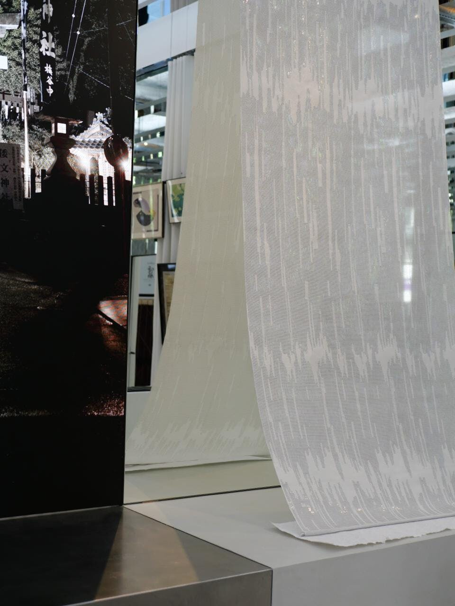

A Japanese paper that has held shrine walls, sliding screens and ceremonial calligraphy for twelve hundred years is being asked to hold the next century of luxury. LVMH Métiers d'Art has given it the floor at La Main, its Paris showroom, for seven days.
The exhibition runs May 28 to June 3, 2026. It is the second chapter of Métiers d'Art du Japon, a programme inside LVMH Métiers d'Art that maps Japanese savoir-faire as a working resource for the group's maisons. The first chapter, in 2024, looked at silk. This one looks at washi.
Public access was a single day on May 30. The rest of the week was reserved for trade visitors, atelier directors and the workshop scouts whose job inside LVMH is to find a material before it is fashionable. The Paris address is La Main, the showroom the group opened in the 8th arrondissement to host this kind of week.
The material
Washi is paper made by hand from the inner bark of kozo, gampi or mitsumata. The fibres are long, the sheet absorbs ink without bleeding, and it does not yellow on the timescale that wood-pulp paper does. Manuscripts in Kyoto temples have held their colour through a thousand winters on the same washi the master papermakers still pull today.
What the exhibition argues is that washi belongs in the same conversation as silk, leather and metal in a luxury workshop. The sheet can be cut, folded, laminated, woven into yarn, sewn, lacquered, embroidered, perfumed. It can carry a print. It can carry a stitch. The atelier directors at LVMH houses left La Main with samples they had not seen before.

Japanese Métiers d'Art at La Main · Paris · May 2026 · Courtesy of LVMH Métiers d'Art
The ten houses
Ten Japanese makers held the floor across textiles, craft, interiors, sportswear, incense and contemporary art. HOSOO, the Kyoto silk house founded in 1688, was the through-line; LVMH Métiers d'Art has held a partnership with the firm since November 2023 and shown its Ambient Weaving installation at La Main in autumn 2024. Eriko Horiki built her large-format washi installations into walls. SOSHIOTSUKI showed garments from the Tokyo menswear label working with paper as cloth.
Wajima Kirimoto sent lacquerware from the Noto Peninsula workshop that has rebuilt since the 2024 earthquake. Kuska Fabric brought handlooms from Yosano, the textile town north of Kyoto. SIWA KOUZO showed Naoto Fukasawa's bag line made from washi laminated for strength. Shoyeido brought incense, Domyo brought silk braids, MIKITYPE brought a graphic practice that draws on washi as a printing surface. Mizuno entered the conversation through performance fabric.
The argument
LVMH Métiers d'Art is the group's internal supply spine. It owns or holds majority stakes in tanneries, exotic leather specialists, metal foundries, weavers and an entire fashion school. Its job is to make sure the houses, from Louis Vuitton to Dior to Loewe, can source what they need to make the things that go in the box.
Washi at this scale is a longer bet. It will not show up on a Vuitton handbag this autumn. The sheets need to be tested, the yarns need to be spun, the conservation people need to sign off on how a paper-based panel behaves in a Singapore summer or a Toronto winter. What La Main offers in a week is the introduction. The work is what follows.
A material that has held a thousand years of temple ink is being asked to hold the next collection. The atelier is the only place that question gets answered.
The Splendid EditThe Japan branch
The programme runs from a Tokyo address. LVMH Métiers d'Art opened LVMH Métiers d'Art Japon in 2024 under Emina Morioka, with a mandate to map Japanese craft and bring it into the group's working library. The first chapter was silk, run with HOSOO in Kyoto. The second is washi. A third on lacquer is the obvious next step, and a fourth on indigo would not surprise anyone who has spent an afternoon at La Main.
The wider context is the slowdown that has marked the first quarter of 2026 for the European luxury group. Sources of differentiation matter more in a softer market. A material that competitors have not learned to source is the kind of differentiation that lasts longer than a campaign.
A small exhibition like this one ends before most people who care about luxury hear about it. The work it sets in motion shows up four years later in the way a bag is lined, a coat is interlined, or a perfume box closes. The fastest read on a luxury group is to watch what its supply chain pulls towards. This week LVMH Métiers d'Art pulled towards a thousand-year-old Japanese paper.
La Main, LVMH Métiers d'Art, Paris 8e. Details at metiersdart.lvmh.com and lvmh.com.
Photography courtesy of LVMH Métiers d'Art · Exposition Washi · La Main, Paris, May 2026